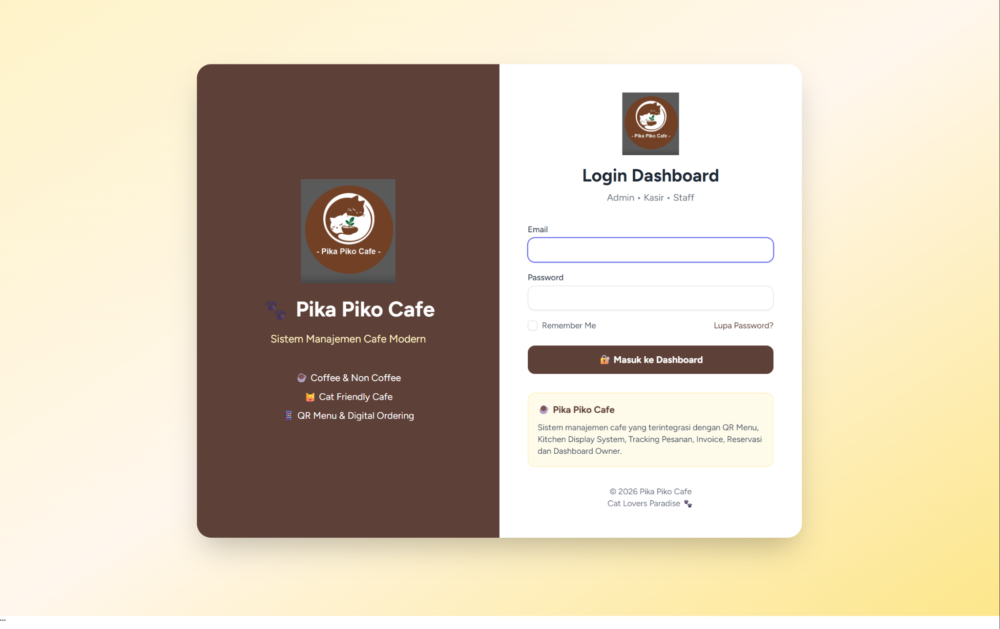
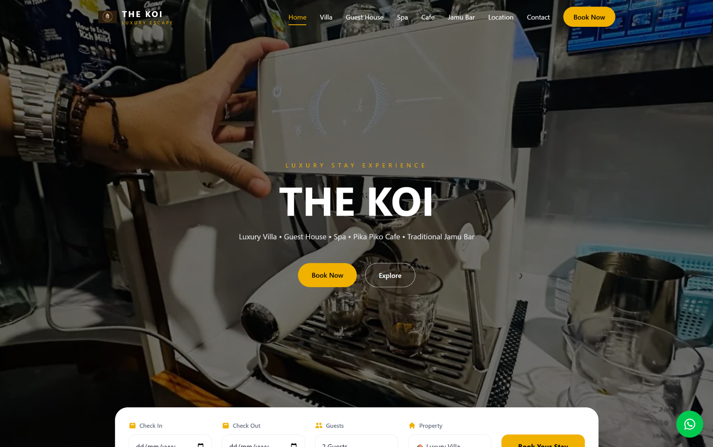
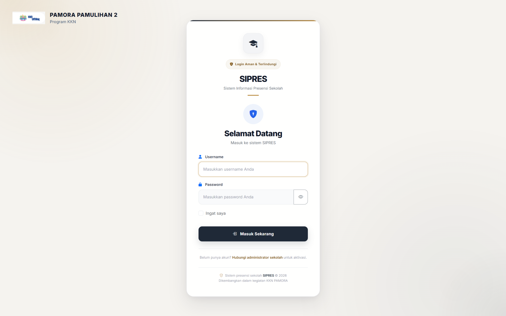

Selected Work · 2026
Projects built for real needs.
Empat proyek yang menunjukkan kemampuan saya membangun solusi end-to-end, bekerja mandiri maupun dalam tim, serta menerjemahkan kebutuhan pengguna menjadi produk digital.
04 Projects02 Individual builds02 Team collaborations

Point of Sale01 / Individual Project
Pika Piko Cafe
Sistem point of sale dan manajemen operasional kafe, dirancang dari struktur database hingga pemesanan pelanggan berbasis QR.
- 12+ modul dan akses berbasis peran
- QR ordering, cart, checkout, tracking, dan kitchen workflow
- Cash/QRIS, invoice, reservasi, dan laporan PDF
- Telah didemonstrasikan kepada pihak kafe
LaravelPHPMySQLBootstrap
View repository ↗
Hospitality Platform02 / Owner & Developer
The Koi
Website hospitality untuk ekosistem bisnis aktif yang mencakup villa, guest house, spa, Pika Piko Cafe, dan traditional jamu bar.
- Reusable components dan responsive interface
- API integration, functional testing, dan deployment
- Digital presence terpadu untuk beberapa unit usaha
Next.jsTypeScriptReactTailwind

Education System03 / KKN Team Project
SIPRES
Sistem presensi digital untuk MA GUPPI Cimasuk 1, dikembangkan sebagai program kerja KKN di Desa Pamulihan, Sumedang.
- Mengelola 127 siswa, 20 guru, dan kelas X–XII
- Presensi, laporan, role pengguna, ekspor PDF dan Excel
- Repository Pattern, Service Layer, dan Eloquent Relationship
LaravelPHPMySQLBootstrap
View repository ↗04 / Team Project
Tepi Kopi
E-commerce produk kopi dengan kontribusi pada pengalaman pengelolaan pesanan dan penyempurnaan antarmuka pengguna.
- Informasi pengiriman dan kontrol status pesanan
- Perbaikan overflow alamat pada komponen
- Pembaruan placeholder autentikasi dan integrasi kode tim
LaravelBladePHPMySQL
View team repository ↗